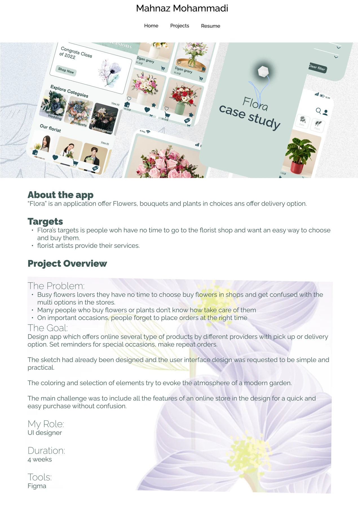
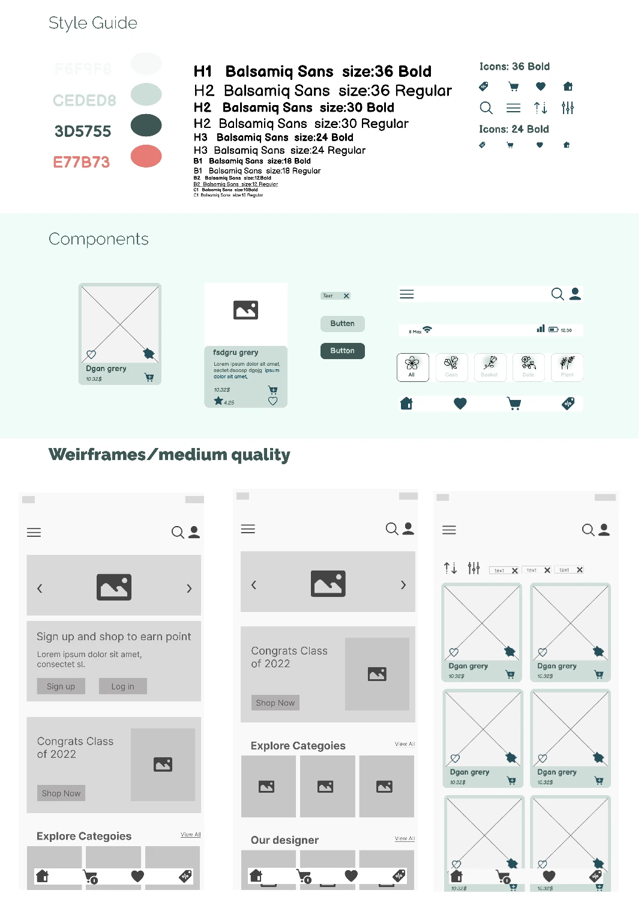
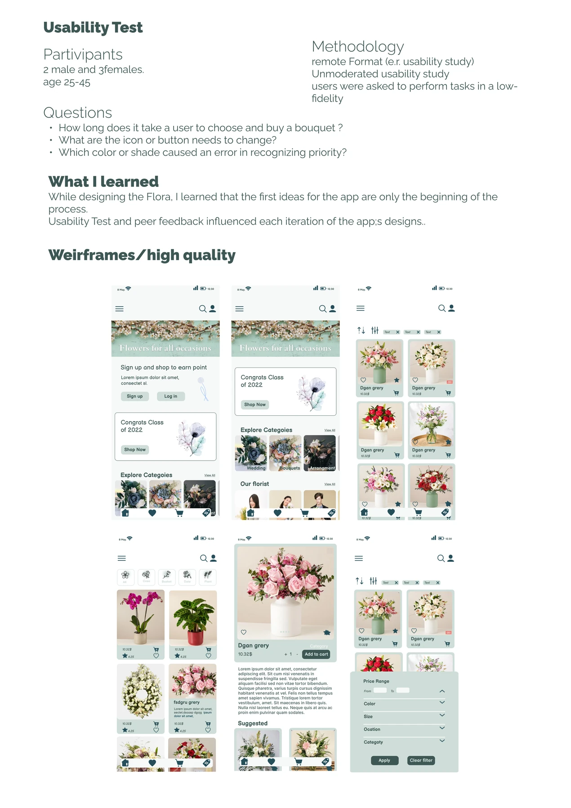

Overview
Flora is designed for plant and flower lovers who want to identify plants and purchase them with confidence. Whether someone spots a beautiful bloom on the street or wants a low-light companion for their desk, Flora bridges identification, care guidance, and shopping in one soft, botanical experience.
Style Guide
Soft greens and earthy tones, with the friendly Balsamiq Sans giving Flora a warm, hand-crafted voice.
Process
- 01
Research
Interviewed plant enthusiasts and browsed plant-shop communities to understand identification and purchase pain points.
- 02
Style Guide
Built a soft-green, earthy design system — rounded shapes, generous whitespace, approachable type.
- 03
Wireframes
Mapped the identify → learn → buy flow: camera identification, care cards, and a curated shop.
- 04
Usability Testing
Tested the identify-and-purchase journey with target users; clarity of care info was the key ask.
- 05
Iteration
Refined the result screen and product cards based on findings, pairing care tips directly with purchasable plants.
Design Screens

